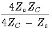

To measure the differential ZD , common mode ZC , and unbalanced ZU impedances, you need an rf impedance measuring instrument like an impedance bridge, noise bridge, vector voltmeter, or network analyzer. For high frequency work I use an old General Radio GR821A twin-T admittance measuring circuit. The main disadvantage of using an old piece of gear like this is that it is slow. The main advantage is that they can be found for very little money, and they measure impedance from 0.4 to 40 MHz. For these measurements, the case of the GR821A is the ``ground.'' I normally set it on the operating desk with a strap to the same safety ground point that the transmitter connects to. The GR821A measures admittance, and requires corrections to the measured values as described in its manual. The GR821A easily measures high impedances, but low impedance values are often outside its range and require the use of a series capacitor to bring the impedance into range. The impedance of the capacitor can then be subtracted off. The inclusion of the corrections, and conversion from admittance to impedance is conveniently done using a programmable calculator or the shack computer. I have written a web based applet that does this. It is available at http://fermi.la.asu.edu/w9cf , and will run within any Java activated web browser. Many hams have noise bridges, and these can be used if they are fairly accurate. To measure high impedances, they will generally require the addition of a shunt capacitor to bring the impedance into the range of the bridge. Again a programmable calculator or computer is handy to do the needed calculations to get the correct impedance.
I measure ZC by connecting both leads of the twinlead together and measuring the impedance to ground. Next I connect wire 2 to ground and measure the impedance between wire 1 and ground and call this Za . Reversing the connections, by grounding wire 1 and measuring between wire 2 and ground gives Zb .
A straightforward application of circuit theory gives the equations:
| ZD | = |

| |
| ZU | = |

| (1) |
| S | = | ZaZC(2Zb2 - ZaZC) + ZaZb(2ZC2 - ZaZb) | |
| + | ZbZC(2Za2 - ZbZC). | (2) |
If Za = Zb , the system is balanced and ZU is zero. In that case, the expression for the differential mode impedance also simplifies to
| ZD =  only when Za = Zb | (3) |
Obviously, the calculations above are tedious unless a programmable calculator or a computer program are used.